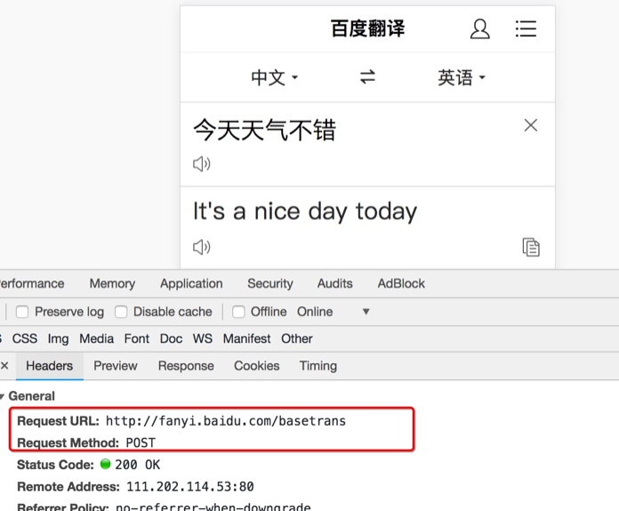
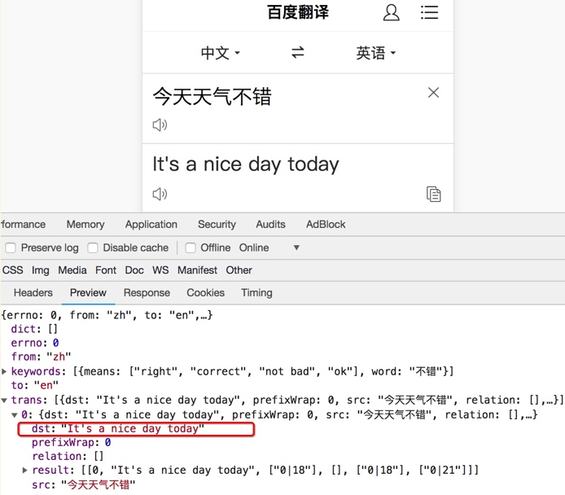

requests模块的深入使用
学习目标：
- 能够应用requests发送post请求的方法
- 能够应用requests模块使用代理的方法
- 了解代理ip的分类
1.使用requests发送POST请求
思考：哪些地方我们会用到POST请求？
- 登录注册（ POST 比 GET 更安全）
- 需要传输大文本内容的时候（ POST 请求对数据长度没有要求）
所以同样的，我们的爬虫也需要在这两个地方回去模拟浏览器发送post请求
1.1 requests发送post请求语法：
用法：
response = requests.post("http://www.baidu.com/", \ data = data,headers=headers)data 的形式：字典
1.2 POST请求练习
下面面我们通过手机版百度翻译的例子看看post请求如何使用：
思路分析
抓包确定请求的url地址

确定请求的参数

确定返回数据的位置

模拟浏览器获取数据
1.3 小结
在模拟登陆等场景，经常需要发送post请求，直接使用requests.post(url,data)即可
2. 使用代理
2.1 为什么要使用代理
让服务器以为不是同一个客户端在请求
防止我们的真实地址被泄露，防止被追究
2.2 理解使用代理的过程

2.3 理解正向代理和反向代理的区别

通过上图可以看出：
- 正向代理：对于浏览器知道服务器的真实地址，例如VPN
- 反向代理：浏览器不知道服务器的真实地址，例如nginx
2.4 代理的使用
用法：
requests.get("http://www.baidu.com", proxies = proxies)proxies的形式：字典
例如：
proxies = { "http": "http://12.34.56.79:9527", "https": "https://12.34.56.79:9527", }
2.5 代理IP的分类
根据代理ip的匿名程度，代理IP可以分为下面四类：
- 透明代理(Transparent Proxy)：透明代理虽然可以直接“隐藏”你的IP地址，但是还是可以查到你是谁。
匿名代理(Anonymous Proxy)：使用匿名代理，别人只能知道你用了代理，无法知道你是谁。
高匿代理(Elite proxy或High Anonymity Proxy)：高匿代理让别人根本无法发现你是在用代理，所以是最好的选择。
在使用的使用，毫无疑问使用高匿代理效果最好
从请求使用的协议可以分为：
- http代理
- https代理
- socket代理等
不同分类的代理，在使用的时候需要根据抓取网站的协议来选择
2.6 代理IP使用的注意点
反反爬
使用代理ip是非常必要的一种
反反爬的方式但是即使使用了代理ip，对方服务器任然会有很多的方式来检测我们是否是一个爬虫，比如：
一段时间内，检测IP访问的频率，访问太多频繁会屏蔽
检查Cookie，User-Agent，Referer等header参数，若没有则屏蔽
服务方购买所有代理提供商，加入到反爬虫数据库里，若检测是代理则屏蔽
所以更好的方式在使用代理ip的时候使用随机的方式进行选择使用，不要每次都用一个代理ip
代理ip池的更新
购买的代理ip很多时候大部分(超过60%)可能都没办法使用，这个时候就需要通过程序去检测哪些可用，把不能用的删除掉。
3 小结
- requests发送post请求使用requests.post方法，带上请求体，其中请求体需要时字典的形式，传递给data参数接收
- 在requests中使用代理，需要准备字典形式的代理，传递给proxies参数接收
- 不同协议的url地址，需要使用不同的代理去请求